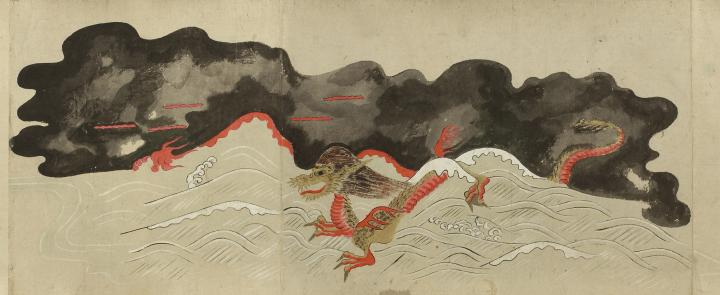

清姫；キヨヒメ，大蛇；ダイジャ，龍；リュウ，日高川；ヒダカガワ，炎；ホノオ

日高川の激しい流れの中を、大蛇となった清姫が渡っていく。赤い体に鱗を生やし、たてがみを後ろにたなびかせた大蛇が画面左側に向かって進んでいる。背景に黒雲。波と黒雲の間に火焔が広がっており、黒雲の中にもところどころ火焔がみえる。
出典：親書誌：U426_nichibunken_0055：道成寺縁起；ドウジョウジエンギ／日付：2006／資源識別子：U426_nichibunken_0055_0005_0000
Copyright (c)2010- International Research Center for Japanese Studies, Kyoto, Japan. All rights reserved.